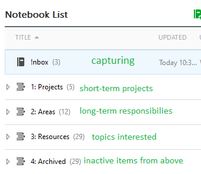
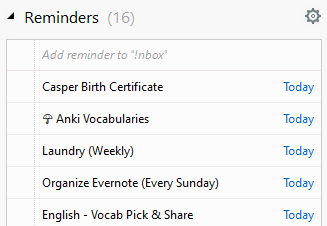

In this era, there are “productive people” who use “productivity systems” to manage day-to-day chores, TODOs, notes and so on. These productivity systems are usually note taking apps (Apple Notes, Evernote, Google Keep, OneNote), task manager apps (Todoist, Wunderlist, TickTick), paper notebooks or the combination of them.
These “productive people” could be divided into two kinds.
The first kind works for the system. They fill the system with unactionable tasks that will never get done and unreadable notes that will never get used again. They do not maintain the system and let it become a chaos. The value added to the system is more than the value generated from it. At the end, they might stop using the system, switch to a “better” app and hope the new one will work out.
The second kind has the system working for them. They might still add unactionable tasks but will make them actionable. They might add unreadable notes but will turn them into references that are searchable and reusable. They maintain the system regularly and are able to stick with it for a long time. The value provided by the system is more than the value added to the system.
I was the first kind and now the second kind. So, what made the difference? I would say it is the methodology. A grand piano helps but one still need to know how to play it.
Don’t get me wrong. I am not saying tools are not important. Both tools and methodologies are important. It is just easier to acquire tools than methodologies. One can buy a grand piano in one day but it takes years of practice to be a great pianist.
Also, I don’t know what the best methodology is, whether it is David Allen’s Getting Things Done (GTD), Ryder Carroll’s Bullet Journal, or your own method. The answer is probably different for different people.
For my own system, it is influenced by GTD but with some modifications. I sticked with the 5 key steps but replaced the Tickler system with Evernote Reminder.
- Capture: Whenever I have something that might need to follow up, I put them into my inbox. It could be a TODO, a random thought, a link, a screenshot, a photo, a new vocabulary, a web clip, or, of course, unactionable tasks.
- Clarify: Later, I convert them to actionable tasks, usable references, someday/maybe, or delete them.
- Organize: I organize those items with Tiago Forte’s P.A.R.A. method, which divides everything into 4 groups, Projects (short-term), Areas of Responsibility (long-term), Resource (topics interested) and Archived. This is the most practical organizational method I have seen so far.
- Review: Every Sunday, I review all notes created in the last week and plan for the next week. I reschedule tasks so that I won’t be too free or too busy next week. Before a long weekend or holiday, I would pull the someday/maybe items and actualize some.
- Engage: When I have free time, I open my task list and do the most important tasks. This have become the “keystone habit” to build other habits, like memorizing vocuburaries and meditation. This also embolden me that I can finish bigger projects, like blogging and reading books, because the task list always reminds me.
Lastly, adding two screenshots which might tell more than the words.

